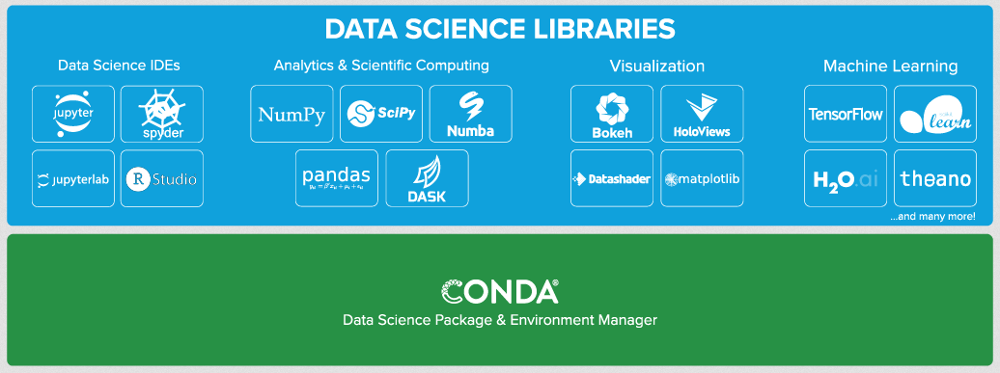
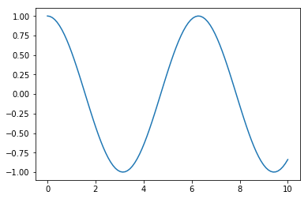
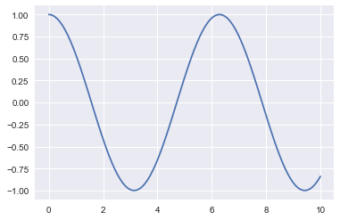

Python for Data Science
Ecole Nationale Supérieure de Cognitique

Sommaire
- Introduction to Data Science
- Why Python?
- Python tools for data science
- Simplified installation with Anaconda
- Code and result sharing with Jupyter Notebook
- Numerical computing with NumPy
- Data analysis with Pandas
- Plotting with Matplotlib and Seaborn
Introduction to Data Science
What is Data Science?
- Main objective: extract insight from data.
- Expression born in 1997 in the statistician community.
- “A Data Scientist is a statistician that lives in San Francisco”.
- 2012 : “Sexiest job of the 21st century” (Harvard Business Review).
- Controversy on the expression’s real usefulness.
Data Science fields

Why Python?
The Python language
Programming language created in 1989 by Guido van Rossum and developed under a open source license.

- Multi-paradigms (procedural, fonctional, object-oriented)
- Dynamic types
- Automatic memory management
- …
The Python syntax
def hello(name):
print("Hello ", name)
friends = ["Lou", "David", "Iggy"]
for friend in friends:
hello(friend)
Demo time
Python, a standard for Data Science
- Language qualities (ease of use, simplicity, versatility).
- Involvement of the scientific and academical communities.
- Ecosystem of dedicated open source libraries.
Python tools for Data Science
Anaconda
Scientific distribution including Python and many (1500+) specialized packages.

Jupyter Notebook
- Web interface for using IPython in a browser.
- Centralizes text, (interactive) code and images in a single notebook (file with .ipynb extension).
- New standard for sharing research results.
Google Colaboratory
Cloud environment for executing Jupyter notebooks through CPU, GPU or TPU.

- Python library for numerical computing
Efficiently handles multidimensional arrays
import numpy as np x = np.array([1, 4, 2, 5, 3]) print(x[:2]) # [1 4] print(x[2:]) # [2 5 3] print(np.sort(x)) # [1, 2, 3, 4, 5]
NumPy and tensors
In the context of Data Science, a tensor is a set of values stored in a multidimensional array.
- Vector = 1D tensor
- Matrix = 2D tensor
Demo time
Python library for data analysis which gracefully handles heterogeneous data
import pandas as pd
pop = pd.Series({'CAL':38332521, 'TEX':26448193, 'NY':19651127})
area = pd.Series({'CAL':423967, 'TEX':695662, 'NY':141297})
states = pd.DataFrame({'population':pop, 'area':area})
Demo time
Python library for 2D plotting
import numpy as np
import matplotlib.pyplot as plt
x = np.linspace(0, 10, 100)
plt.plot(x, np.cos(x))

Seaborn
- Python library for data visualization
Improves presentation of matplotib-generated graphics
import seaborn as sns sns.set()
